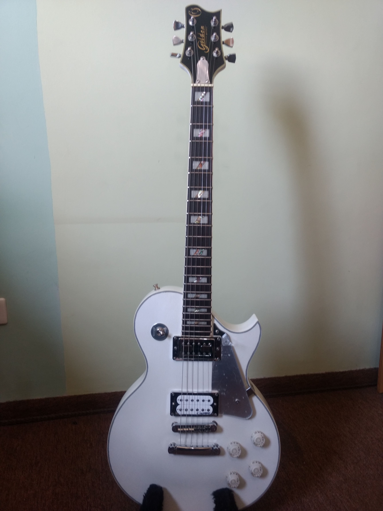
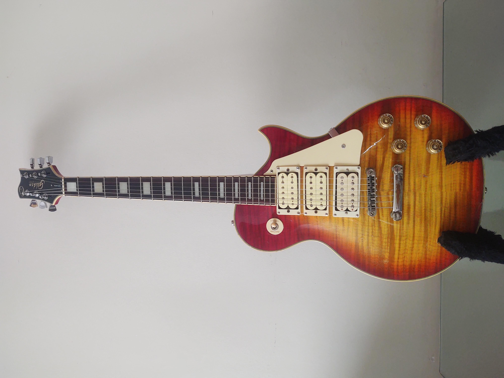
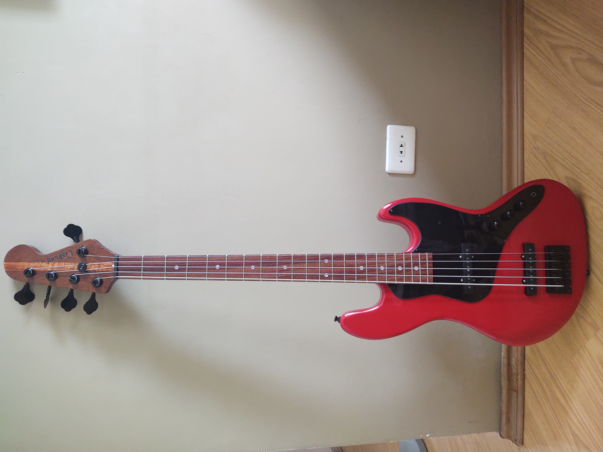
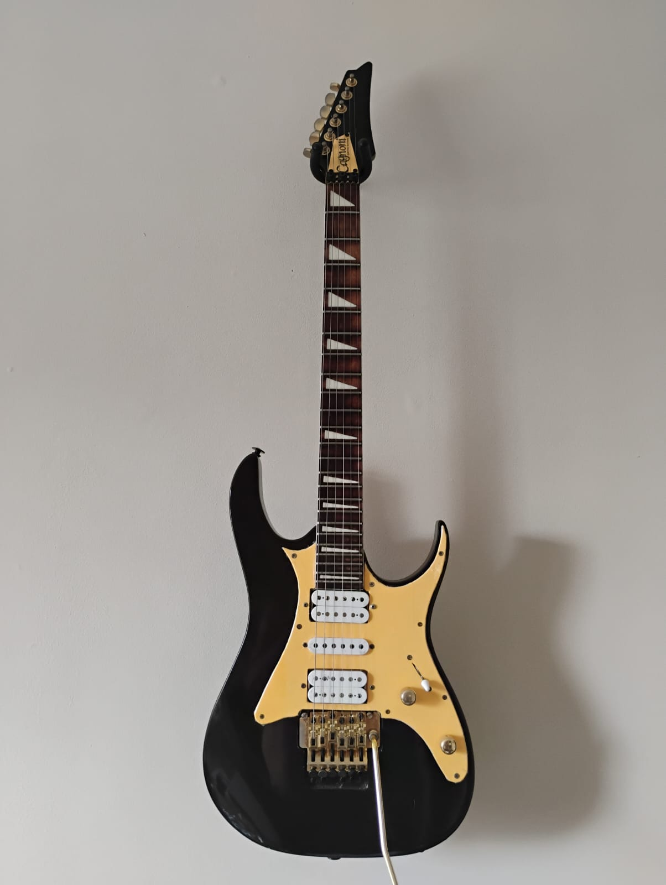

Customizações
Aqui estão algumas das customizações que fiz e uma descrição das modificações ou melhorias que foram feitas.
- 
- 
- 

- 
Desde o começo da adolescência, influenciado pelos primeiros festivais de rock no Brasil me interessei por música, quando comecei a aprender a tocar violão no final dos anos 80, e aquele sunho de garoto de me tornar um rockstar. A partir de então estudei na área de exatas me formando primeiramente como técnico em mecânica e após tecnólogo e engenheiro eletrônico, tendo atuado na areá ate em torno de 2010. Retomo a atividade musical mais seriamente a partir de 2008, por acaso, construindo minha primeira guitarra. Mais uma vez influenciado por idolos que admirava. A partir de então comecei a atender amigos, e amigos viraram clientes. Decidi fazer um curso de luthieria, cursando modulos de manutenção e de construção. Cosntruir e ter a oportunidade de ver ideias se tornarem realidade é o que me motivo mais nessa atividade.
Nesta sessão estão os intrumentos que construi até o momento com uma breve descritivo dos detalhes de da um.
Aqui estão algumas das customizações que fiz e uma descrição das modificações ou melhorias que foram feitas.
Nesta galerias estão alguns instrumentos que passaram pela oficina para trabalhos como: regulagens, manutenções ou correções. Fazemos regulagem geral, troca de captadores, troca de hardware entre outras atividades. Qualquer dúvida entre em contato nos nosso canais abaixo.
Para qualquer dúvida ou orçamento contacte através das redes abaixo